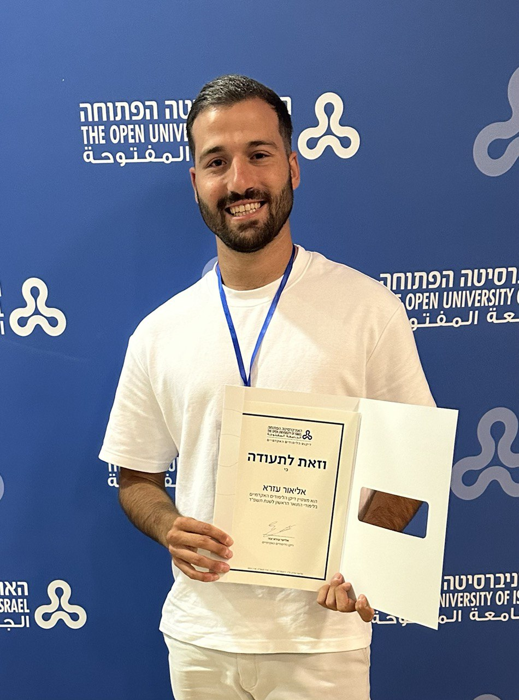

About Me
Highly motivated Computer Science student with strong expertise in Java and C. Proficient in data structures, algorithms, and system programming. Passionate about solving complex problems and seeking opportunities in Software Engineering, Embedded Systems, or Backend Development.
- Email: eliorezra12345@gmail.com
- Phone: 053-3315214
- GitHub: EliorEzra
- LinkedIn: eliorezra
Skills
- Programming Languages: Java, C, Python (basic)
- Operating Systems: Linux, Windows
- Concepts: OOP, Algorithms, System Programming
Projects
-
Assembler for Linux
Developed an Assembler in C for parsing, processing, and translating assembly code.
Worked with symbol tables, memory management, and system calls in Linux.
Utilized Makefile and unit testing to ensure code quality and efficiency.
GitHub Repo
Resume
Download Resume (PDF)Education
The Open University – B.Sc. in Computer ScienceGraduation: 2026/2027
Dean’s List – 2023, 2024
GPA: 91
- Algorithms – 95
- Introduction to Computer Science – 95
- C Lab - Linux – 93
- Data Structures – 89
Languages
- Hebrew – Native
- English – Great